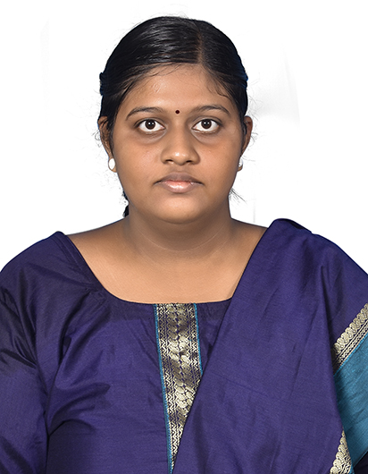

About Myself

|
| Hello everyone my name is Theetshitha L I am from Trichy .
My father is a teacher ,
now he is retired because of his health condition,His name isR.Lakshmanan .
My mother is a sweet home maker. Nothing is possible without her.
She is such a big support for all of my family members,her name is L.Vijayalakshmi .
My brother is studying diploma (Computer Engineering) final year,
his name is L.HariRamChanth .
I completed my school studies till 10th standard (84%) at
Boiler Plant Girls Higher Secondary School, Trichy.Because of my family situation,
After completing my 10th standard joining for work at sumathi publications book shop in Trichy ,
And working for 2 years.But,I should not stop my studies .
I continued my studies in private 11thand 12th standard (49%) successfully.
After that I was surprised by my aunty and relatives that they are
willing to help me with my studies. With my aunty's help
I completed my diploma (Computer Engineering) at Seshasayee Institute Of Technology(Computer Engineering) at Seshasayee Institute Of Technology
.